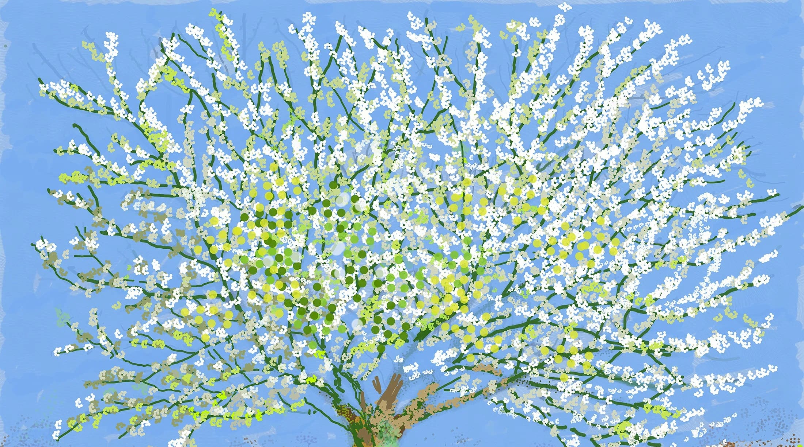

无法取消的春天
创作介绍
大卫·霍克尼：第 180 号，2020 年 4 月 11 日，iPad 绘画（版权所有 © 大卫·霍克尼，2020）来自无法取消的春天，由 Thames & Hudson 出版。
这幅画是霍克尼关于重新与艺术和自然建立联系如何让社会渡过难关的宣言。“我们与自然失去了联系，相当愚蠢，
因为我们是自然的一部分，而不是置身于自然之外，”他在画中展示道。“这会及时结束，然后呢？我们学到了什么？
生活中唯一真实的东西就是食物和爱，按此顺序，就像我们的小狗鲁比一样……而艺术的源泉就是爱。我热爱生活。”